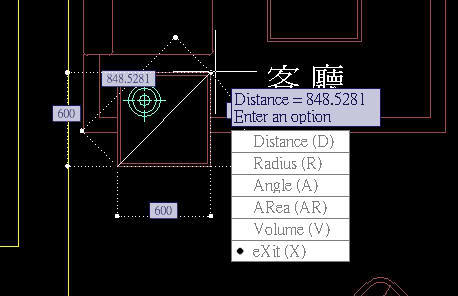
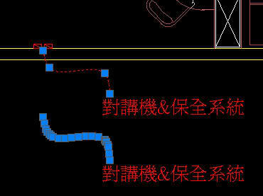
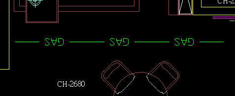
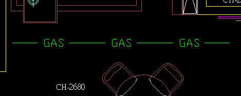
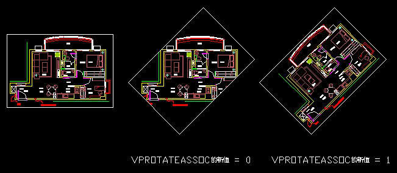
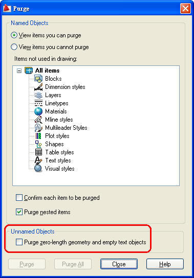
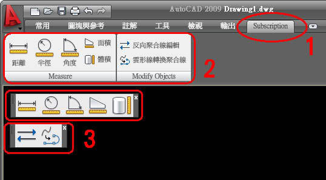

這個原廠開發的 Bonus Pack ，預計只能使用在 AutoCAD 2009版本，我的看法應該是在測試市場需求行情，期待未來在 AutoCAD 2010版本中能成為新功能之一，以下我整理了一些重點文章及影片和所有朋友分享，有興趣的朋友請提出來一起討論~
■ AutoCADR 2009 Subscription Bonus Pack 提供許多實用的 AUGI (Autodesk 國際使用者群組) 功能請求，包括：
1. New measurement capabilities (MEASUREGEOM command)
新的測量功能 (MEASUREGEOM 指令)

2. SPLINE to PLINE
雲形線轉換為聚合線

3. Reverse PLINE edit
反向聚合線編輯


4. Rotating viewport and have the view rotate with the viewport
旋轉視埠並讓視圖隨視埠旋轉

5. Erase unreferenced unnamed objects
刪除未參考的不具名物件

■ Subscription用戶可以免費下載，安裝完畢後會產生:
1.Subscription 功能區頁籤
2.Measure 功能區面板 及 Modify Objects 功能區面板
3.Measure 測量功能工具 及 Modify Objects 物件修改工具

說明：依照作圖習慣的不同，有的使用者使用 DIST指令 來測量，也有使用者習慣使用 線性DIMLINEAR指令 來測量圖面中的物件，現在可以透過 MEASUREGEOM 指令來快速查詢，建議搭配 動態(F12) 功能，能讓 MEASUREGEOM 指令功能更完整。
全屏展示:
說明：一般畫線的時候有分方向，有的使用者習慣由左至右(水平線的角度為0度)，也有使用者習慣由右至左(水平線的角度為180度)，但是這樣的法線方向在一般使用沒有太大差別，若你使用在 造型線型 或是 等距MEASURE指令時，就有很大的影響。
現在可以透過 REVERSE指令 來反向聚合線方向，也可以使用更新後 PEDIT指令 中的 Reverse (R)副選項， 來達成 反向聚合線方向。
全屏展示:
說明：早期都需要自行開發AutoLISP程式來滿足，而論壇中也有分享 雲形線轉換為聚合線 的程式下載，現在可以使用更新後 SPLINEDIT指令 中的 convert to Polyline (P)副選項， 來達成 雲形線轉換為聚合線。
全屏展示:
說明：AutoCAD 2008之前的版本，在配置中若想要對視埠進行旋轉，都需要花費一番功夫，現在可以將新的 vprotateassoc系統變數 設定為1，即可直接透過 旋轉ROTATE指令 來旋轉視埠並讓視圖隨視埠旋轉。
全屏展示:
說明：一般隨著圖面的交流，而在交流中使用的AutoCAD版本有很多，有時會因舊版本的錯誤資訊導致未參考的不具名物件，而最典型的狀況為 零長度的幾何物件、空的文字字串物件，早期也是都透過AutoLISP來處理。
現在可以使用更新後 PURGE指令，來清除 零長度的幾何物件及空的文字字串物件，若圖面中沒有零長度的幾何物件及空的文字字串物件，該選項功能則不顯示。
全屏展示:
※目前 Bonus Pack 只提供英文版本，但可視需要安裝於任何當地語系化版本的 AutoCAD。即使您將其載入非英文版的 AutoCAD 中，亦只會以英文顯示所有的新指令及相關指令。
dwg範例檔下載:
http://www.filesco.com/download.php?id=5B7C0F221
[討論]AutoCAD 2010新功能初探
http://autocad.bestoforum.net/forum-f44/topic-t1503.htm
[發表]AutoCAD 2009 - Bonus Pack 2